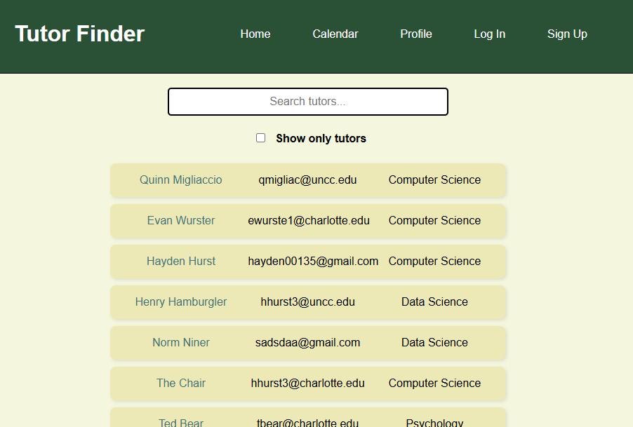
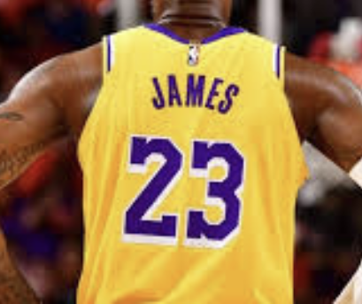
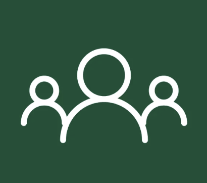
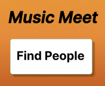
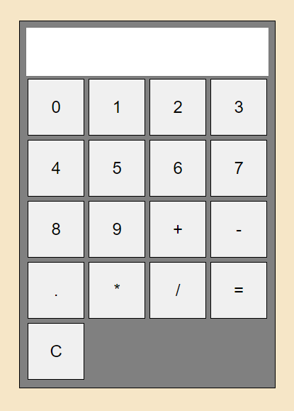
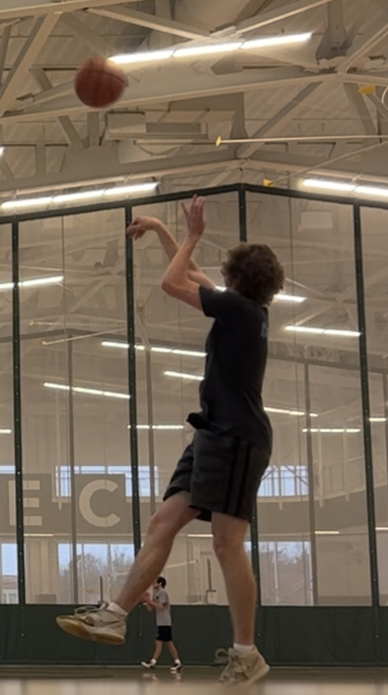
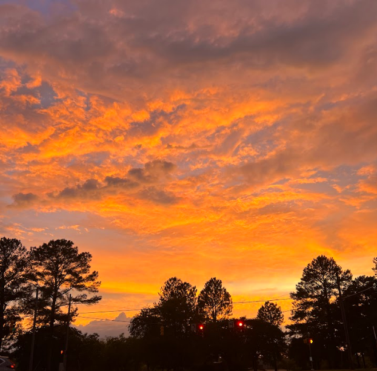
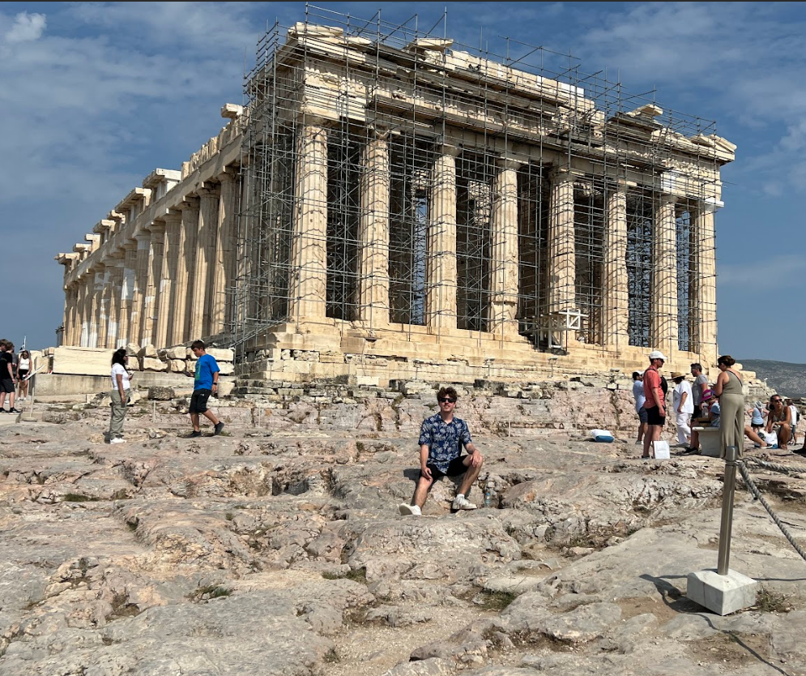
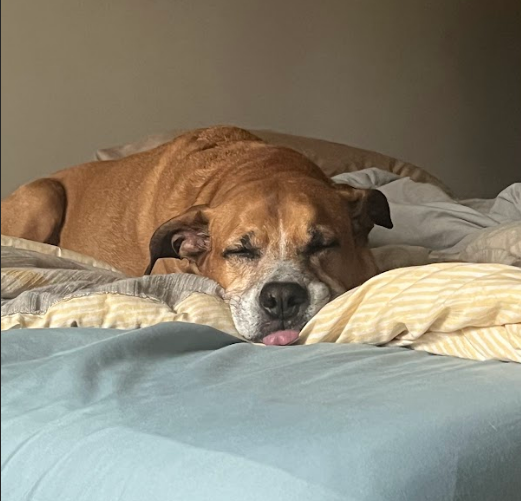
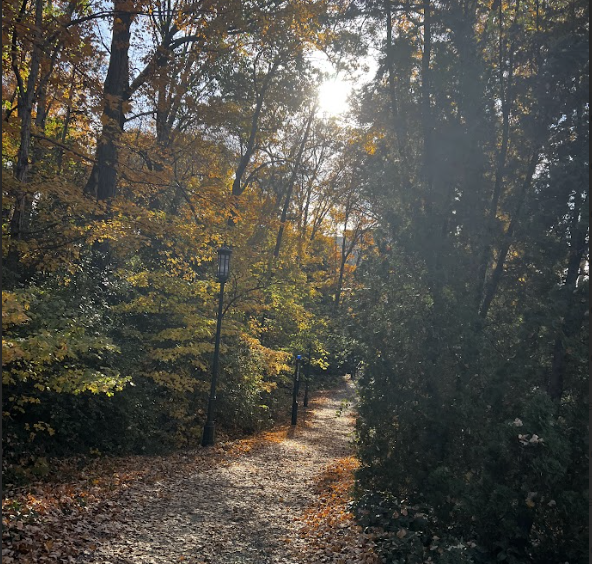

Hi
My name is Evan Wurster and I'm a Software Developer with a Bachelors degree in Computer Science from UNC Charlotte.
I build desktop and web applications, primarily using Java/Spring and JavaScript/Node.
My recent work includes freelance development of a custom AI-powered internal tool for a Charlotte catering company,
automating event planning and cost breakdowns. For my senior capstone, I led development on the full-stack MERN Tutor Finder web app.
I'm driven by solving complex problems, quickly mastering new tools, and contributing to meaningful, collaborative projects. Explore my work below,
or connect with me via the contact section!
Education
GPA:
3.32 / 4
Graduated:
May 2025
I began studying at University of North Carolina at Charlotte in Fall 2022. I graduated with a Bachelors degree in Computer Science with a concentration in IT in May 2025. Throughout my academic career I've built projects primarly with Java and JavaScript. I studied data structures, algorithms, and logic theory, and had the great opportunity to further develop my communication skills in my many public speaking and ethics related courses.
I graduated from HHS in May 2021 and attended Wake Tech Community College for 2 semesters. I took my first beginner programming course in High School and learned visual basic. I began using Java when I went to Wake Tech.
Experience
Software Developer (Freelance)
Best Impressions Caterers | May 2025 - Jul 2025
Following graduation, I spent the summer working as a Freelance Software Developer for Best Impressions. My team and I worked on projects to
help automate cost analysis and operational workflows. We used Python and several APIs (Google, OpenAI) to extract, process and structure
cost breakdowns from unstructured text.
In collaboration, our team developed techincal solutions to real business problems, while picking up new tools and skills.
Projects
Tutor Finder

This full-stack MERN application connects students with available tutors through searchable user profiles, integrated scheduling, and a custom calendar system. Built with MongoDB, Express, HTML/CSS, and Node.js, the app supports secure user authentication, profile creation/editing, and meeting requests that respect tutor availability. Students can browse tutor profiles by subject or major, submit meeting requests, and view scheduled sessions on a personalized calendar. The project showcases my ability to work within a team to build a responsive, user-friendly interface, implement RESTful APIs, and manage data flow between frontend and backend. It reflects my focus on practical, accessible design and demonstrates real-world web development skills, from database modeling to dynamic front-end rendering.
Daily LBJ in JavaScript

Daily LBJ is a full-stack web application that generates and displays an AI-generated fact about LeBron James based on the current date. The app cycles through the color schemes and jersey numbers of the Cavaliers, Heat, and Lakers to reflect LeBron’s legacy and career progression. It features a dynamic frontend styled in team colors and communicates with the OpenAI API through a secure Node.js + Express backend.
Weather App in JavaFX
I developed a comprehensive weather application using Java, integrating a user-friendly interface with JavaFX. The app provides real-time weather updates by leveraging the OpenWeatherMap API, while also utilizing the Geocoding API to convert city names into precise coordinates. To streamline the development process, I employed Maven for build automation and used the Jackson library for efficient JSON parsing. The application features dynamic user input functionality, allowing users to easily access global weather data, all presented within a clean and intuitive interface.
Campus Wellness Initiative

As part of a collaborative team of five, I contributed to the development of a comprehensive plan for a campus wellness app. This project encompassed detailed strategies for both backend and frontend development, effective stakeholder coordination, and a robust marketing strategy. Key elements included risk management, budget oversight, and quality assurance, all designed to preemptively address potential challenges and ensure high-quality outcomes. This initiative aimed to enhance campus well-being through an all-ecnompassing wellness app.
Music Meet

In my Human Centered Interactions/Design course, I collaborated with a team of three to create the user interface for Music Meet, an app designed to connect musicians seeking to collaborate. Using Figma, we embraced a minimalist and intuitive design approach, focusing on simplicity and ease of use. The interface features a clean 'Deciding' page for effortless browsing of musician profiles, an instant messaging system for straightforward communication, and an event creation page for seamless organization of music sessions. We leveraged several design and interaction principles, including progressive disclosure, affordance, visual hierarchy, and consistency to ensure an intuitive and minimalist user experience.This project underscored the importance of user-centered design, as we aimed to create a user-friendly experience that aligns with the needs of musicians while maintaining a sleek and efficient interface.
Bookstore POS in Java
In this project, I developed a Java-based Bookstore POS system to streamline customer transactions and inventory management. Doing so required implementing features for adding, updating, and deleting products and membershps in the inventory database, ensuring accurate stock levels and membership lists
Simple Web Calculator

In this project, I designed and built a web-based calculator using HTML, CSS, and JavaScript to provide basic arithmetic operations. I implemented the core functionality of the calculator in JavaScript, allowing users to perform addition, subtraction, multiplication, and division.
About me




